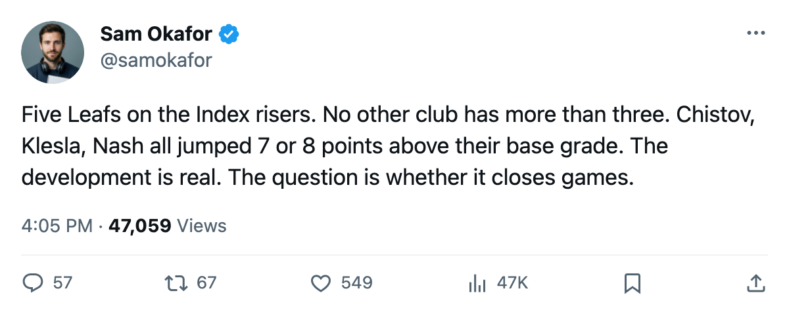
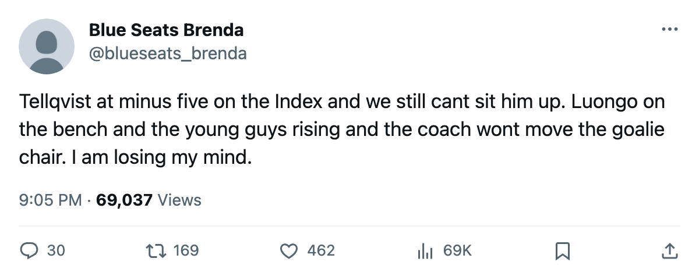

TOR
TORYoung Guns Watch: 5 Leafs on the Index risers, Tellqvist on the fallers
No other club has more than 3 players with a positive form term after 20 games
 Sam OkaforLeafs beat reporter · Queen City Telegram
Sam OkaforLeafs beat reporter · Queen City Telegram
Five Toronto players sit on the League Scouting Bureau's Development Index risers list after 20 games, the most of any club in the league. No other team has more than 3.  Marian Gaborik99 leads the group at +11, followed by
Marian Gaborik99 leads the group at +11, followed by  Stanislav Chistov87,
Stanislav Chistov87,  Rostislav Klesla87, and
Rostislav Klesla87, and  Jamie Lundmark81 each at +8, and
Jamie Lundmark81 each at +8, and  Rick Nash85 at +7.
Rick Nash85 at +7.
The form term measures how far a player's current overall sits above the Book's base grade. Chistov entered the season at 78 and reads 86 now. Klesla carries the same jump, 78 to 86. Nash moved from 77 to 84. The Index rarely hands out +8 or more to a full season's worth of players on one roster.
Gaborik's +11 is the highest form term on the entire risers list, and it is frozen. He played 17 games before a leg injury landed him on the shelf between November 16 and November 17, with a return date of December 25. His overall of 99 reflects a base of 91 elevated by 11 points of form that cannot move while he is out. When he returns, the question is whether that form holds or the Index resets toward the base.
Chistov has 10 points in 20 games at 18.9 minutes a night, skating the left side of the second line. Klesla has 6 points in 20 games at 26.2 minutes, the top minute load among defencemen. Nash carries 12 points in 20 games on the third line at 14.2 minutes a night. Lundmark has 1 point in 12 games but the Index credits the defensive contribution at +8.
On the fallers side, Mikael Tellqvist73 sits at -5, one of the deepest drops on the list. His base of 77 now reads 72. He has faced the net in 8 games with a goals-against average the sheet does not print at the club level. The coaching staff has dressed Maxime Ouellet86 as the backup and left  Roberto Luongo95 out of the slot system entirely.
Roberto Luongo95 out of the slot system entirely.
The five-game stretch beginning tomorrow tests whether the Index numbers translate into points. Toronto visits  Ottawa Senators on November 25, hosts
Ottawa Senators on November 25, hosts  Washington Capitals on November 26, travels to
Washington Capitals on November 26, travels to  Philadelphia Flyers on November 29, welcomes
Philadelphia Flyers on November 29, welcomes  Buffalo Sabres on November 30, and finishes against
Buffalo Sabres on November 30, and finishes against  Tampa Bay Lightning on December 3. Three of those five are divisional games. The Bruins sit 3 points back in 19 games and own the head-to-head series 2-0.
Tampa Bay Lightning on December 3. Three of those five are divisional games. The Bruins sit 3 points back in 19 games and own the head-to-head series 2-0.

